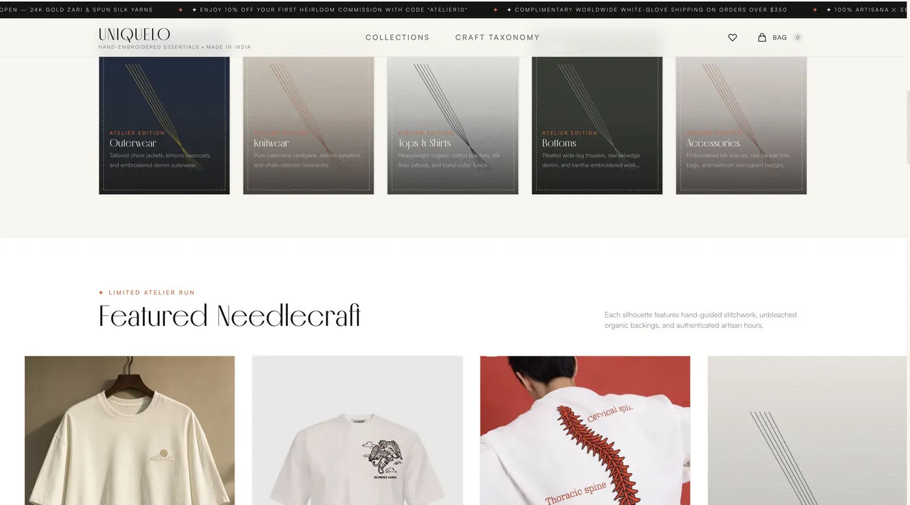
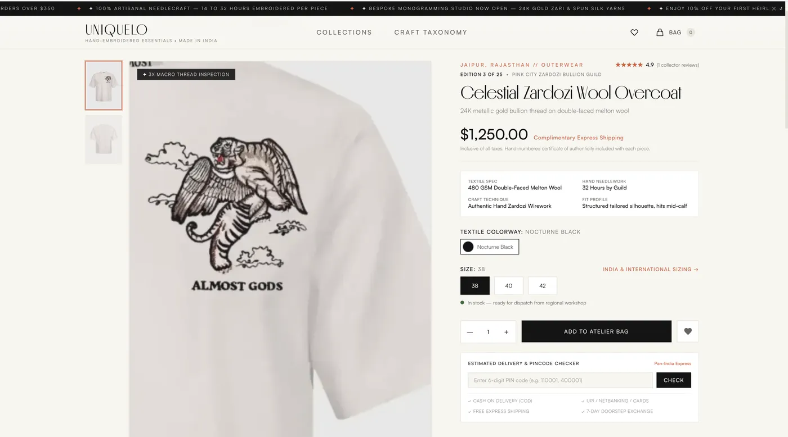
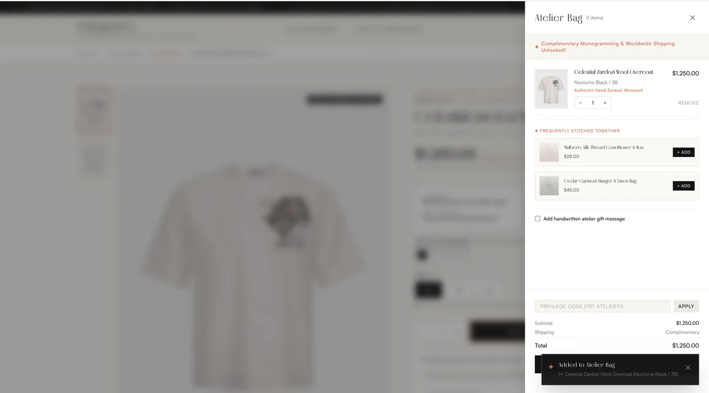
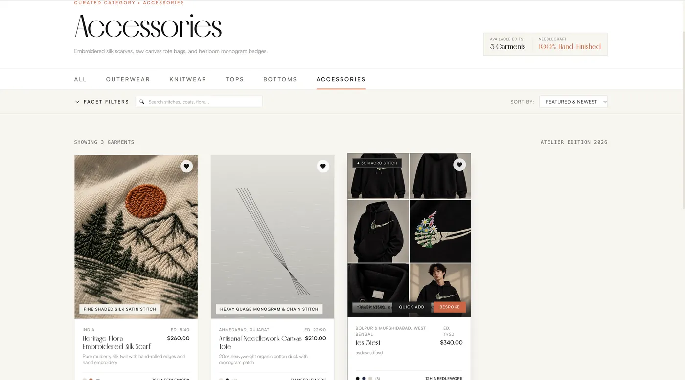

UniqueLo — commerce with a live database.
A luxury embroidered-apparel storefront where everything is real: products, craft provenance, and pricing are served from a live Supabase Postgres database — and the content surfaces are built so a non-technical owner can run the store day to day.




click any image to enlarge
Under the hood.
A complete SQL schema plus seed dataset under version control — products, variants, craft techniques, provenance fields (batch number, craft region, fabric GSM) — executed 1-click on Supabase. Data contracts are documented so types, schema, and seed stay in parity.
Modern stack with strict typing throughout, a documented design-token system, oxlint for code quality, and async data layered through a query layer — the app falls back to seeded JSON only when the database isn't configured.
GSAP + ScrollTrigger and Lenis smooth scroll drive a documented motion system (docs/04) — reveals, parallax, and transitions specified per component so the luxury feel is systematic rather than ad-hoc animation.
The whole point of the project: articles, prices, and product upload are maintainable by a non-technical person, with agent-assisted edit flows. The docs suite (README + STAR_GOAL north star + phase docs) is the source of truth for any human or agent working on it next.
Deploy posture: Vercel with vercel.json for edge caching and SPA routing, plus a multi-stage Dockerfile + docker-compose for a self-hosted production server on any VPS — the same codebase, two deployment targets.
live: unique-lo.vercel.app · db: supabase (sql schema + seed in repo)
Planned in docs, shipped by agents.
Built as a phased project: a north-star vision document, then design-system and data-contract docs, then build phases executed by agent workflows with the documentation as the contract. This is the forward-deployed method working end to end — the docs let cheap models do the mechanical work while the plan holds the system together.